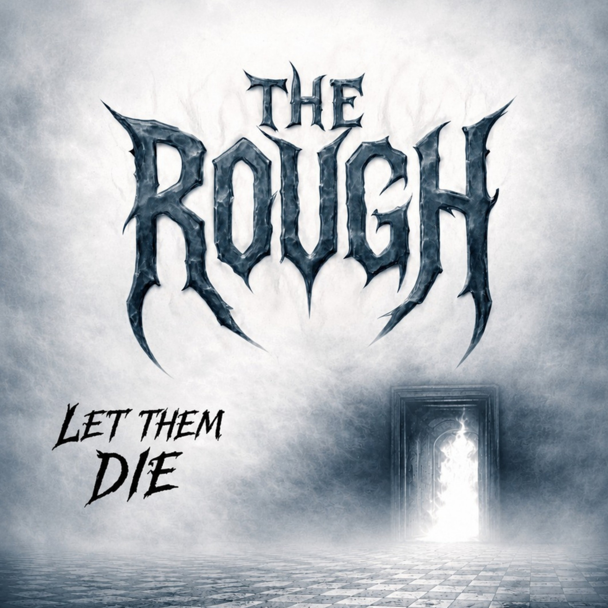
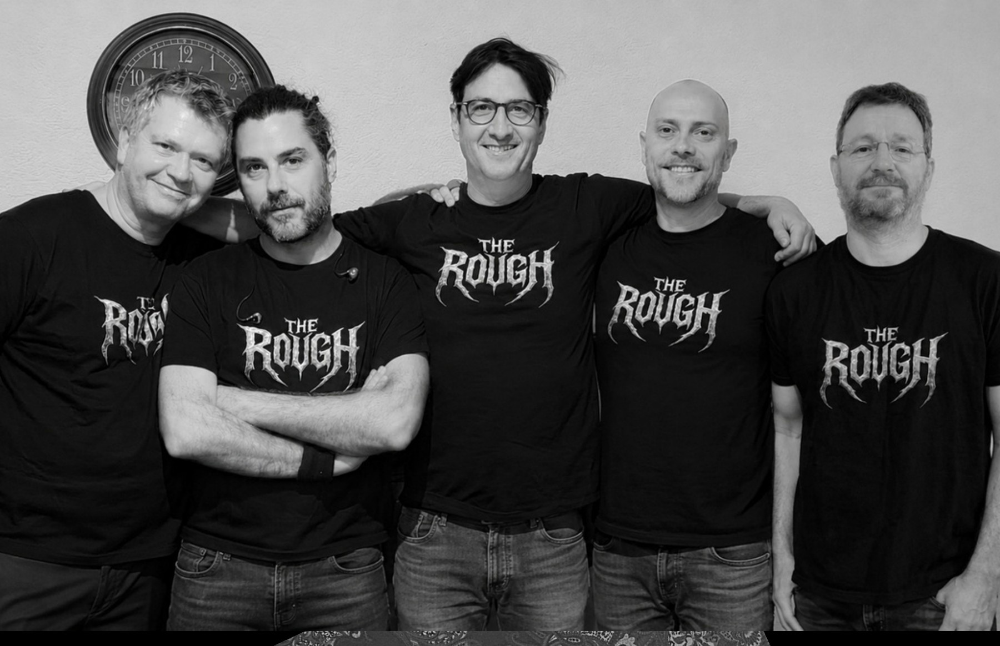

Renaud Faure
Chant
FRENCH METAL · 2026
LET THEM DIE
5 musiciens. 8 titres. Aucun compromis.
Le premier album de The RougH est sorti le 4 septembre 2026. Une traversée sombre et humaine entre colère, deuil, dépendance, fin de vie, prédation et pouvoir.
Découvrir l’album
LE GROUPE

The RougH est un groupe français de metal composé de cinq musiciens réunis autour d’une même envie : jouer une musique puissante, directe et sans artifice.
Sur Let Them Die, les musiques, les paroles et les arrangements sont crédités collectivement à The RougH. Le disque mêle une énergie résolument metal à des thèmes profondément humains.
Chant
Guitare
Guitare
Basse
Batterie
PREMIER ALBUM
Sorti le 4 septembre 2026 · 8 titres · 36 min 33 s
MÉDIAS
Clips, sessions, contenus du groupe et plateformes officielles.
Ajoutez ici la chaîne YouTube officielle et les vidéos de Dante, PEL et des prochains titres.
Spotify, Deezer, Apple Music, YouTube Music et Bandcamp peuvent être ajoutés en une minute dans le fichier site-config.js.
Un même nom et une même graphie partout : The RougH.
PRESSE / EPK
The RougH est un groupe français de metal réunissant cinq musiciens. Son premier album Let Them Die, sorti le 4 septembre 2026, propose huit titres où se croisent mort, deuil, colère, dépendance, souffrance, prédation et dérives du pouvoir. Musiques, paroles et arrangements sont réalisés collectivement par The RougH.
Pour les programmateurs et médias : ajoutez l’adresse de contact officielle dans site-config.js.
CONTACT
Pour toute demande concernant The RougH, utilisez l’adresse officielle du groupe.
{kind=link}
{kind=link}